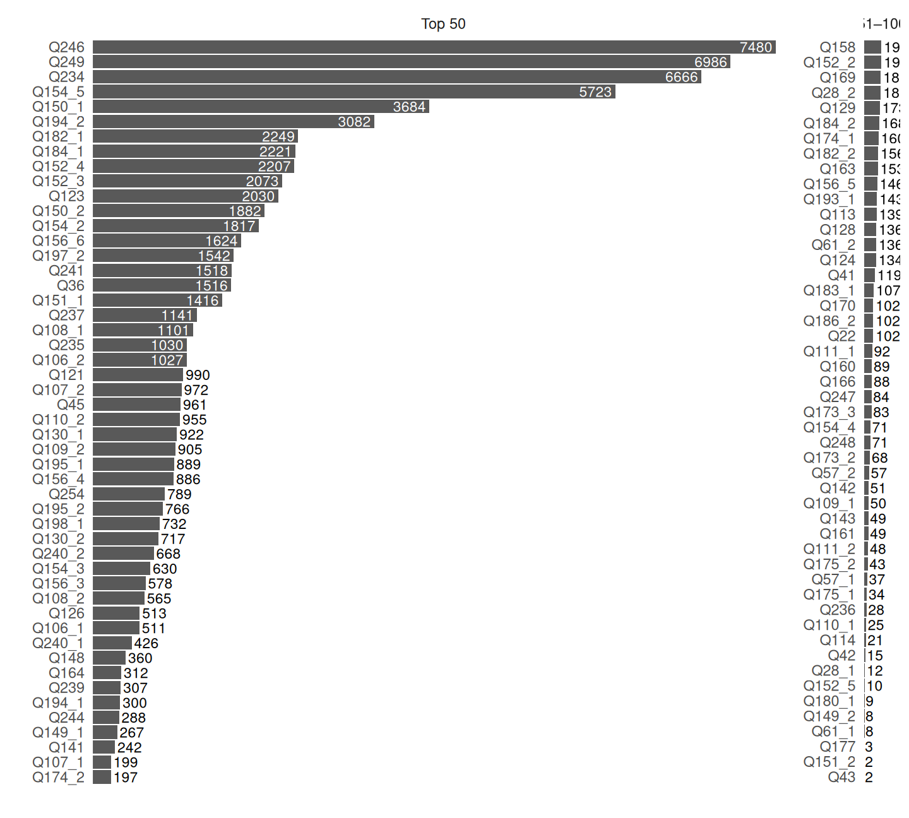

We present the concept of reproducing an agent-based model of opinion dynamics by replacing an abstract numerical opinion space with large-language models (LLMs), capable of generating human-like statements in natural language, to decide how agents change their opinions. We aim to validate by computer simulation whether the mechanism of filter bubble creation through social media will also show up in this more realistic setting. We also discuss different ways to implement parts of the original model using LLM agents and the potential challenges we may face integrating LLMs into an agent-based model of opinion dynamics.
This is work in progress and not yet ready for citation. Please contact the authors if you want to use or discuss this work.
1 Introduction
Opinion dynamics is one of the main topics in agent-based modeling of sociopolitical systems (Flache et al. 2017; Lorenz et al. 2021). Models of opinion dynamics have been used to understand the mechanisms of societal radicalization and polarization, and the emergence of filter bubbles in various ways (Keijzer and Mäs 2022; Keijzer et al. 2026).
A shortcoming of opinion dynamics models has always been that something as complex as the opinion of a human being has to be boiled down to one number (or a vector of a few numbers) in an abstract numerical opinion space such as the left-right political continuum. Of course, numerical opinion spaces also have applied use. Researchers measure the attitudes of individuals with specific or large-scale international (representative) surveys, where individuals self-assess their attitudes on (standardized) scales, e.g. with numbers from 0 to 10. In addition, actors in political discourse in the real world use spatial metaphors such as a politician “moving to the right, left, or center”. So, political science has developed several methods for positioning political actors and texts in low-dimensional numerical opinion spaces. These methods range from expert assessments using theory-driven classification to data-driven approaches measuring positions in latent dimensions of higher-dimensional spaces using roll-call, co-voting data, survey data, or texts using dimensionality reduction and natural language processing.
The well-known models of continuous opinion dynamics (see Lorenz 2025) make use of such abstract one-(or low-)dimensional opinion spaces and define how individuals change their opinion on that scale when confronted with the opinions of others. However, an attitude change does not occur based on the exchange of numerical numbers but through verbalization of arguments (Banisch and Olbrich 2019), persuasive messages, and emotional emphasis, whether written or spoken language, or other media such as images. While it is plausible that the attitudes of individuals can be mapped reasonably well into a low-dimensional numerical space for descriptive purposes, it is less realistic that individual attitude change can be well operationalized solely based on just the exchange of numbers.
Large Language Models (LLMs) provide a new opportunity to build a new generation of opinion dynamics models. LLMs trained on large bodies of text seem to have embedded the meaning of the antagonisms and compatibilities of opinions as stated in written texts.
In this paper, we build such a model inspired from the filter bubble model of Geschke et al. (2019). The main entities in the model are agents positioned in a two-dimensional numerical opinion space, and statements (called bits of information) positioned in the same opinion space. They are linked to a limited number of statements composing their worldview. They define their position in the opinion space by the average position of their worldview (in both dimension). Further on, agents maintain a social network of bidirectional friendship links. Based on this setup, agents have a few behavioral mechanisms implemented. When they are presented with a new statement, either from a central media or their friends, they decide whether to integrate it into their worldview or not. If they integrate it they drop another statement. With a change of statements they adjust their position in opinion space to the new worldview average. They can share a statements of their worldview along all their friendship links, mimicking its posting on social media.
The macroscopic opinion landscape of agents and statements in the model is thus a bipartite network of agents and statements, where agents are linked to the statements of their worldview, and statements are linked to the agents that have them in their worldview. In such an opinion landscape, a bubble is a set of agents whose worldviews have a high overlap of statements while the overlap with all other agents is low or non-existent. The model shows the following emergent mechanisms/phenomena:
When new statement comes in from a central media source which every agent listens to, the opinion landscape develops a structure characterized by high and low density regions but the network remains fully connected without strong bubbles.
When new statement come additionally from friends, the opinion landscape develops a structure characterized by bubbles. How many bubbles emerge depends to a large extent in a parameter called latitude of acceptance which defines how far away a statement can be from the average position of an agent’s worldview to be integrated. When this latitude is small, many small bubbles emerge. When it is large enough, only one large bubble emerges.
This model setup can be transformed into a text-based setup without a numerical opinion space. Statements transform from dots in two-dimensional numerical space to textual statements. Instead of linking to numerical positions, agents maintain a list of statements as their worldview. The behavioral mechanisms of integrating and dropping statements are performed using an LLM prompt.
In this study we used a limited set of 100 statements extracted from the World Value Survey questionnaire. Each statement is directly related to one survey item and to a certain response (or response scale). This creates options for validation of emergening worldviews in LLM simulations with empirical survey responses.
The phenomena we want to study with this model are on different levels.
On generative phenomena:
Does the textual representation of opinions and the use of LLMs for integration decisions lead to the same phenomena of bubble formation as the numerical model?
Is the presence or absense of social posting of statements by friends similarily relevant for the emergence of bubbles?
Do we see new phenomena emerging in the text-based model which were not present in the numerical model?
On interacting LLMs:
Which statements do LLM agents prefer to integrate into their worldview?
To which worldviews do LLM agents converge when they interact with each other?
On model validation:
Do the worldviews emerging in the LLM-based model show a similar structure as the worldviews of individuals in the World Values Survey?
This list of research questions in not exhaustive and will be extended as we progress with the implementation and analysis of the model.
2 Methods and Data
2.1 Model
The implementation of the agent-based model using LLMs for agent’s worldview integration decisions follows mostly our outline (Lorenz and Gunes 2025).
A preliminary set of outcomes from simulation runs are shown in the Network Explorer.
All runs were with 100 agents and 100 World Value Survey statements. Simulations started with each agents having one random statement in memory. In each time step all agents first received the same set of three randomly selected statements from the total set of statements and decide about integrating them. Then every agent selected a random statement from their worldview and shares it with all friends. When every agent shared. Each agent gathers the list of the shared statements of all friends and decides upon integration and dropping again. This is repeated for 100 time steps.
This is an example prompt starting with an ever equal system prompt for all agents and then a user prompt with the same content but different statements for each agent:
You are an individual with a worldview represented by a list of statements. You are presented with a list of new statements coming to your attention. Choose the single statement that best fits with your worldview, or reject all of them if no statement fits well with your worldview. Your list of statements is considered full when it contains 10 statements. Respond in JSON with two entries: ‘selected_statement’ must be the index number of the new statement you choose, or ‘None’ if you do not select any statement because they all do not fit well with your worldview. ‘drop_statement’ must be the index number of the statement you will drop from your list of worldview statements if your memory is full, or ‘None’ if you do not need to drop a statement. For example, if there are three new statements shown, then the value of the ‘selected_statement’ entry must be 1, 2, 3, or ‘None’. On a scale from 0 to 10, where 0 means you almost never accept new statements and 10 means you almost always accept new statements, your openmindedness is 3.
Here are the statements you can choose from:
“Government should take more responsibility to ensure everyone is provided for”
“Science and technology are making our lives healthier, easier, and more comfortable”
“We depend too much on science and not enough on faith”
Here is the list of your existing worldview statements:
“Honest elections make an important difference in people’s lives”
“Homosexuality should be treated as totally normal”
“My most imporant personal goal is protecting freedom of speech”
“Political violence is never justifiable”
“The government should not monitor emails and Internet communication”
“In a democracy it is essential that women have the same rights as men”
“Freedom is more important than security”
“In a democracy it is essential that civil rights protect liberty from state oppression”
“Homosexual couples are as good parents as other couples.”
“Abortion should be legal”
This particular prompt resulted in the outcome:
Agent selected: “Science and technology are making our lives healthier, easier, and more comfortable”
Agent dropped: “The government should not monitor emails and Internet communication”
Example network:
Figure 1: Interactive bipartite network
4 Analysis
Code
## Popular Statements Sim at t=100stats_pop <- memory |>filter(t ==100) |>left_join(runs_core, by =join_by(run_id)) |>left_join(statements_meta, by =join_by(S_id)) |>count(run_id, S_id, Worldview_Statement, M, openmindedness, post) |>summarize(popularity =sum(n),.by =c(S_id, Worldview_Statement, M, openmindedness, post) )stats_pop_total <- stats_pop |>summarize(popularity =sum(popularity), .by =c(S_id, Worldview_Statement)) |>mutate(label =glue("{S_id} {Worldview_Statement}")) |>arrange(desc(popularity))df <- stats_pop_total |>slice(1:100) |>mutate(group =if_else(row_number() <=50, "Top 50", "51–100") |>factor(levels =c("Top 50", "51–100")) ) |>arrange(group, desc(popularity)) |>mutate(S_id_ordered =paste(S_id, group, sep ="___"),S_id_ordered =fct_inorder(S_id_ordered) |>fct_rev() )pad <-200# data-unit space reserved for outside labels, same in both panelsp <- df |>ggplot(aes(y = S_id_ordered, x = popularity, label = popularity)) +geom_col() +geom_text(aes(hjust =ifelse(popularity >1000, 1.1, -0.1),color =ifelse(popularity >1000, "white", "black") ),size =3 ) +scale_color_identity() +scale_y_discrete(labels = \(x) sub("___.*$", "", x)) +facet_wrap(~group, scales ="free", nrow =1) +scale_x_continuous(breaks =c(),expand =expansion(mult =0, add =c(0, pad)) ) +labs(y ="", x ="") +theme_minimal() +theme(panel.grid =element_blank())ranges <- df |>group_by(group) |>summarise(xmax =max(popularity)) |>pull(xmax)widths <- ranges + pad # matches the actual displayed range now, not an arbitrary offsetp +force_panelsizes(cols =unit(widths, "null"))

Figure 2: Popularity of statements at time step 100.
The outcome networks show typical characteristics like being one tighly connected bubble with few statements, being compused of two such tighly connected bubbles with very few bridges, or more diverse networks without or not very pronounced “bubbleness”.
Before turning to a mathematical network metrics to quantify different types we made a manual coding using eye-bulling on three different aspects: number of bubbles quantifies if the network is better quantified to be 1, 2, or 3 bubbles. A bubble is similar to what is also called a module or a cluster. It is supposed to be a group of nodes which are more connected among each other than to the other nodes. In our manual coding a we consider a diverse network without a clear bubble structure to be one bubble. As this classification can not distinguish between tightly connected bubbles and wide stread structures, the next aspect is bubbleness. Bubbleness has a value of 0, 0.25, 0.5, 0.75, or 1 where 1 means that all bubbles have not many statements and are therefore tightly connected and 0 means that the number of statements is still very large and bubble structure if not visible. Finally, parity takes also the values 0, 0.25, 0.5, 0.75, or 1. A network with one bubble always receives the value 0. For networks with two or three bubbles 1 specifies that the bubbles are almost equal in size with respect to the number of agents, while 0 stands for a network where one of the bubbles includes almost all nodes.
So, the clearest indicator of a consensusal society is with one bubble with maximal bubbleness (1, 1, 0). A maximally bipolarized polarized soceity has two bubbles with maximal bubbleness and parity. is most clearly quantified with (2, 1, 1).
We acknowledge the support of the European City Squared project, funded by the European Union’s Horizon Europe research and innovation programme under grant agreement DOI: 10.3030/101178170. We also thank our colleagues in the project for their valuable feedback and discussions on this work.
We thank Alua Aldaniyaz and Asmae Nakib for their enlightening data analysis of World Value Survey data with the goal of quantifying worldviews of individuals in their student project on Visual Communication and Data Storytelling at Constructor University. Their work also built the basis of the selection of statements from the World Value Survey questionnaire for our model.
We thank Betül Yurtman for her work on assessing the empirical plausibility of emerging worldviews in the LLM-based agent-based model.
6 References
Banisch, Sven, and Eckehard Olbrich. 2019. “Opinion Polarization by Learning from Social Feedback.”The Journal of Mathematical Sociology 43 (2): 76–103.
Flache, Andreas, Michael Mäs, Thomas Feliciani, et al. 2017. “Models of Social Influence: Towards the Next Frontiers.”Journal of Artificial Societies and Social Simulation 20 (4): 2. https://doi.org/10.18564/jasss.3521.
Geschke, Daniel, Jan Lorenz, and Peter Holtz. 2019. “The Triple-Filter Bubble: Using Agent-Based Modelling to Test a Meta-Theoretical Framework for the Emergence of Filter Bubbles and Echo Chambers.”British Journal of Social Psychology 58: 129–49. https://doi.org/10.1111/bjso.12286.
Haerpfer, Christian, Ronald Inglehart, Alejandro Moreno, et al. 2022. World Values Survey: Round Seven – Country-Pooled Datafile. JD Systems Institute & WVSA Secretariat. https://doi.org/10.14281/18241.24.
Keijzer, Marijn A., Jan Lorenz, and Michał Bojanowski, eds. 2026. Computational Social Science of Social Cohesion and Polarization. Computational Social Sciences. Springer Nature Switzerland. https://doi.org/10.1007/978-3-032-01373-6.
Lorenz, Jan, and Erkan Gunes. 2025. “Filter Bubbles in an Agent-Based Model Where Agents Update Their Worldviews with LLMs.”ESWC 2025 Workshops and Tutorials Joint Proceedings. https://ceur-ws.org/Vol-3977/SemGenAge-3.pdf.
Lorenz, Jan, Martin Neumann, and Tobias Schröder. 2021. “Individual Attitude Change and Societal Dynamics: Computational Experiments with Psychological Theories.”Psychological Review 128 (4): 623–42. https://doi.org/10.1037/rev0000291.
![]()